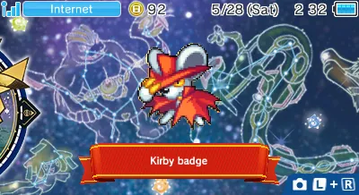

3DSのカスタムでかバッジを作り方
バッジとれ～るセンターは３ＤＳのホーム・メニュを飾るためにバッジを受けるためにキャッチャーで遊ぶＦ２Ｐのゲーム。３ＤＳにＣＦＷをインストールするのをもって、ユーザーは６４×６４ピクセルＰＮＧでカスタムバッジを作れる。特殊な種類のバッジの「でかバッジ」がある。二か四つの一般なバッジで成り立っているでも、上の画面にあらゆるパートは一つのバッジに見える。
カスタムでかバッジを作り方：
- はじめにＧＹＴＢでバッジを注射して。３ＤＳアプリのUniversal-Updaterを使ってＧＹＴＢをダウンロードできる。使う前にＧＹＴＢの文書化を読んでください（日本語のＧＹＴＢについてブログの投稿）。組み合わせてでかバッジにしたいイメージはアルファベット順に隣にあるために名付けなくてはいけません：
- 縦の１×２でかバッジは、上の半、次に下の半。
- 横の２×１でかバッジは、左の半、次に右の半。
- ２×２でかバッジは、上左、次に下左、次に上右、最後に下右。
- Simple Badge InjectorとAdvanced Badge Editorをダウンロードして、 リンクしたウェブページの指図を読んでください。
- Simple Badge Injectorでバッジのデータをダンプして。
- データをAdvanced Badge Editorで開いて。
- でかバッジごとに、あらゆるバッジのパートが同じのＩＤと異質のSub IDにならせて。Sub IDを設定しなくてはいけない数値は種類のでかバッジによって異なる：
- 縦の１×２でかバッジは、上の半のバッジのSub IDが１０００と、下の半のが１０１０。
- 横の２×１でかバッジは、左の半のバッジのSub IDが１００と、右の半のが１０１。
- ２×２でかバッジは、上左が１１００、下左が１１１０、上右が１１０１、下右が１１１１。
- エディットを保存して。
- Simple Badge Injectorを使って３ＤＳに編集したバッジのデータを注射して。
Advanced Badge Editorでカテゴリ（改造の群集ではセットと呼ばれる）やでかバッジを編集できる。唯一の編集できない特殊なプロパティはピンだ。公式のバッジは、ピンをきれいな点に据えた、でもＧＹＴＢで注射したバッジはピンをいつも６４×６４イメージの中心に据えた。これので、小さいバッジに前からピンの後ろが見えてる。gbatempのredunkaはピンの位置付けを管理する数値を知った。しかし、数値を使い方が不明です。いつかバイナリエディタを使ってそれを勉強するかもしれない、ピンの数値を編集するツールを作るかもしれない。それが約束じゃないです。あなたはピンの数値を勉強できるかもしれない？バイナリエディタが必要です。僕はＨｘＤを使ってる、しかしWindowsだけにある。ウィキペディアに代表的なバイナリエディタのリストがある。あなたのバイナリエディタでBadgeMngFile.datを開いて、3dbrewの文書化を使って十六進の数値の意味を知られる。